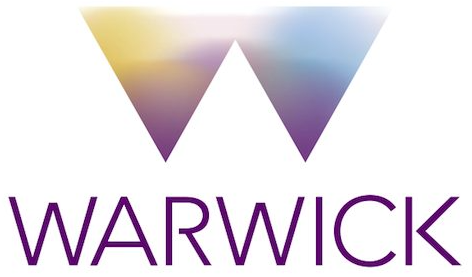
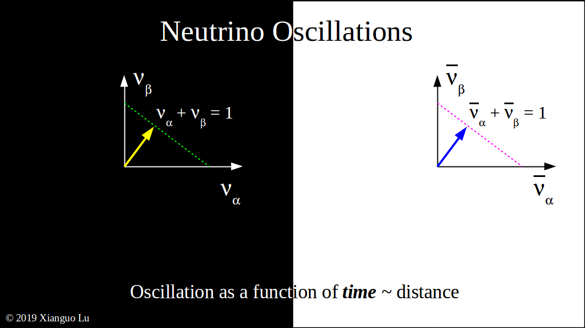
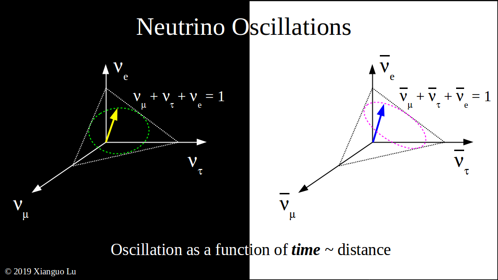

|
VISOS (VISualisation of OScillation) |
 | ||||
|
|
VISOSim (VISOS interactive mode)
In the Standard Model of particle physics, there are three types of neutrinos—that are of the e, μ, and τ flavours—and none of them have mass. However, as it turns out, a neutrino can change its flavour during propagation. This is the so-called neutrino oscillation phenomenon. It is unambiguous evidence of neutrino mass, and therefore of physics beyond the Standard Model.
In a simple world, let's consider neutrino oscillation between two flavours, say, α and β. If we represent the chance of a neutrino being να and νβ by x and y, respectively, then as time goes on, the neutrino trajectory in this probability space is x+y=1. For an antineutrino, the antiparticle of the neutrino, we have the same time trajectory for two-flavour oscillation.

Now, let's represent the chance of a neutrino being νμ, ντ, and νe by x, y, and z, respectively. Similar to the two-flavour case above, now we know that the time trajectory must lie on the plane x+y+z=1 but can have various shapes. It is this additional degree of freedom that allows the neutrino and antineutrino to have different time trajectories, and therefore different oscillation patterns. If indeed neutrinos and antineutrinos oscillate differently, then the so-called Charge-Parity (CP) symmetry is violated, and we might be able to understand further why matter dominates over antimatter in the present Universe.

If we cut out the x+y+z=1 triangle from the probability space and put it down, we can see more easily how a neutrino changes its flavour with time. The VISOS (VISualisation of OScillation) project aims to illustrate the flavour evolution of a neutrino or antineutrino in this precise and yet intuitive way. For a given set of oscillation parameters, the oscillation probabilities are calculated using the Prob3++ programme [1]. These probabilities are then combined to form time trajectories presented in a movie with the help of ROOT and ezgif.com.
The following two movies show how a νμ and its antiparticle νμ of energy 0.6 GeV (equivalent to about 60% of a proton mass) change their flavour. δCP=0 stands for no CP violation, while the other one is for maximal violation. We can see that for no CP violation, the two trajectories lie on top of each other. More movies can be found in the Gallery. In addition to the existing movies, one can also create their own animation with VISOSim (VISOS interactive mode).
Tau neutrino and antineutrino trajectories in vacuum with maximal CP violation. |
Electron neutrino and antineutrino trajectories in Earth's crust. |
Muon neutrino and antineutrino trajectories in vacuum at the T2K baseline. |
Muon neutrino and antineutrino trajectories in Earth's crust at the T2K baseline. |
Muon neutrino and antineutrino trajectories in Earth's crust at the DUNE baseline. |
Muon neutrino and antineutrino trajectories at two energies in Earth's crust at the DUNE baseline with maximal CP violation. |
Muon neutrino and antineutrino trajectories in Earth's crust at the DUNE baseline without CP violation. |
Muon neutrino and antineutrino trajectories in Earth's crust at the DUNE baseline with maximal CP violation. |
Electron antineutrino trajectories in Earth's crust at the JUNO baseline without CP violation. |
Electron antineutrino trajectories in Earth's crust at the JUNO baseline with maximal CP violation. |
Electron antineutrino trajectories in Earth's crust at the KamLAND baseline with maximal CP violation. |
|
Xianguo Lu, University of Warwick (PI) Felix Christensen, University of Oxford Rasched Haidari, University of Oxford Lukas Koch, University of Oxford Artur Sztuc, Imperial College London (alumnus) |
[1] R. Wendell et al., "Prob3++ software for computing three flavor neutrino oscillation probabilities", 2012.
| v0.2 | 1 Sep 2021 |
| v0.1.2 | 17 May 2019 |
| v0.1.1 | 20 Apr 2019 |
| v0.1 | 14 Apr 2019 |